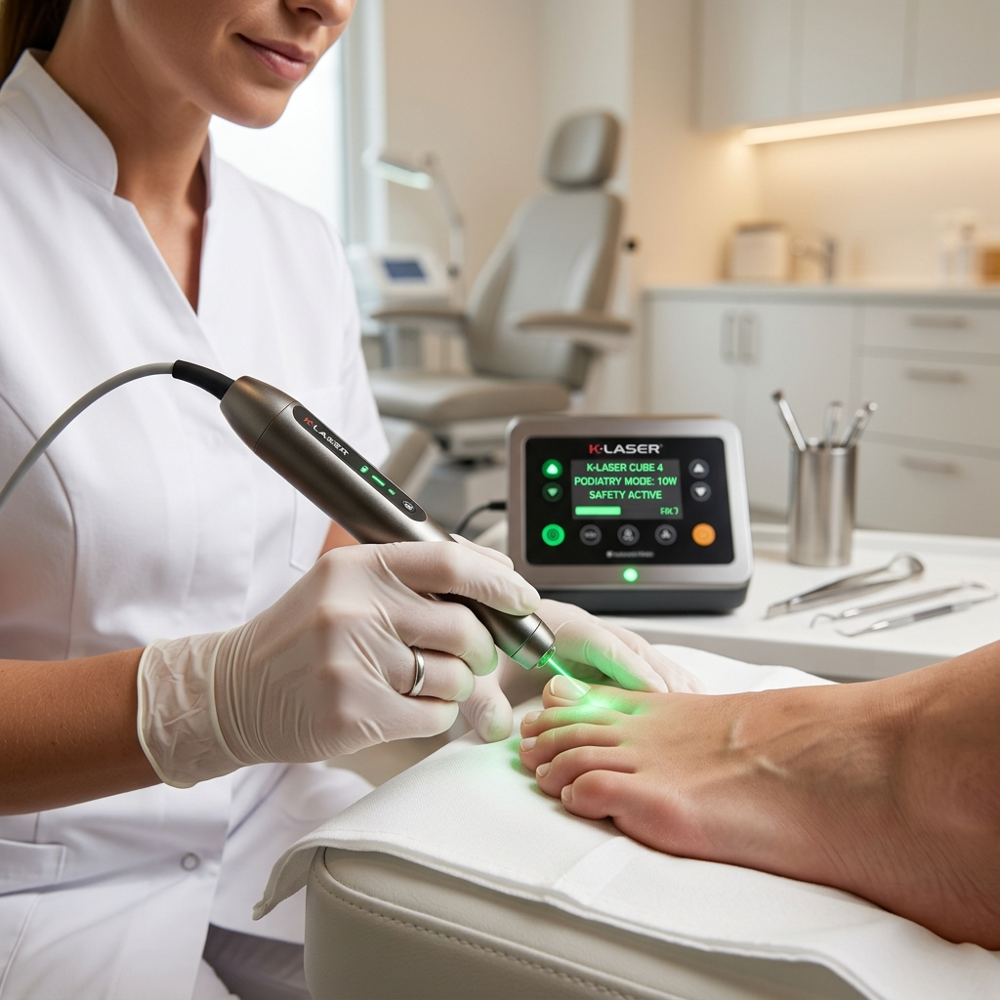

Seus pés merecem quem entende de verdade.
Especialista em unhas infeccionadas e tratamento a laser. Cuidando da saúde e do alívio dos seus pés desde 2006, em São José dos Campos.
Você se identifica com alguma dessas dores?
Problemas nos pés não se resolvem sozinhos. Sentir dor diária ou tentar tratamentos caseiros pode agravar a situação.
Unha Encravada Recorrente
Aquele incômodo que parece melhorar por alguns dias, mas volta a doer ao calçar qualquer sapato.
Unha Infeccionada com Dor
Pulsando, vermelha, inchada e extremamente sensível ao menor toque. Exige cuidado clínico imediato.
Micose de Unha Persistente
Unhas amareladas, grossas ou quebradiças que não melhoram com remédios orais ou esmaltes comuns.
Calos e Calosidades
Camadas de pele grossa e dura que causam queimação ao caminhar, muitas vezes tratadas de forma incorreta em casa.
Fissuras e Rachaduras
Calcanhares extremamente secos com rachaduras profundas que chegam a sangrar e abrir portas para infecções.
Pés Diabéticos e Idosos
Pés com sensibilidade reduzida que exigem corte técnico preventivo e higiene rigorosa para evitar feridas sérias.
Cuidado clínico focado na sua recuperação rápida
Protocolos seguros e sem dor desnecessária. Tecnologia de ponta aliada a quase 20 anos de experiência clínica.
Tratamento de Unhas Infeccionadas
Especialidade da casa. Protocolo clínico seguro, focado em drenagem, desinflamação e alívio imediato da dor desde a primeira sessão, sem dor desnecessária ou técnicas invasivas traumáticas.

Laserterapia Clínica
Tecnologia a laser de última geração. Acelera drasticamente a cicatrização de infecções, reduz processos inflamatórios dolorosos e elimina fungos de micose de dentro para fora, sem efeitos colaterais.
Tratamento de Unhas Encravadas
Resolução definitiva do encravamento através de espículaectomia (retirada técnica da ponta da unha) e aplicação de órteses corretivas para guiar o crescimento saudável.
Calos e Calosidades
Remoção profissional e indolor da pele espessa (hiperceratose) e dos núcleos de calos, devolvendo o conforto completo ao caminhar com resultados duradouros.
Fissuras e Hidratação Profunda
Desbastamento profissional de rachaduras no calcanhar, seguido de hidratação oclusiva de alta performance e orientação de home care para pés macios e saudáveis.
Podologia Preventiva
Corte técnico correto das unhas, limpeza dos sulcos e lixamento higiênico regular. Ideal para evitar o surgimento de patologias e garantir o bem-estar constante.
Spa dos Pés Clínico
Um momento dedicado ao alívio do estresse diário. Inclui higienização profunda, esfoliação suave, hidratação aquecida e massagem relaxante nos pontos de tensão dos pés.
Dúvidas sobre qual tratamento é o ideal para o seu caso?
Conversar com a EspecialistaPor que pacientes que já tentaram de tudo procuram a Suellen?
Quando se trata da saúde dos seus pés, a experiência clínica e a tecnologia certa fazem toda a diferença entre alívio temporário e cura definitiva.
Quase 20 anos de experiência
Atuando ativamente desde 2006. São milhares de casos clínicos resolvidos com sucesso. Essa bagagem prática garante segurança no diagnóstico e suavidade na execução dos procedimentos.
Tecnologia a Laser Avançada
Tratamentos modernos e não invasivos. O laser vai direto na raiz do problema, combatendo fungos de micose e acelerando cicatrizações sem a necessidade de medicamentos agressivos para o fígado.
Atendimento que respeita você
Ambiente totalmente higienizado, sem julgamentos e sem pressa. Cada paciente recebe uma avaliação minuciosa e um plano de tratamento personalizado para o seu ritmo e nível de dor.
Conheça quem vai cuidar da saúde dos seus pés
Olá, sou a Suellen A. de Mello. Minha missão é devolver a liberdade de caminhar sem dor e o orgulho de exibir pés saudáveis.
Com formação técnica e especialização clínica profunda, atuo na área de podologia desde 2006 em São José dos Campos. Ao longo dessas quase duas décadas, dediquei minha carreira a estudar os tratamentos mais desafiadores, tornando-me especialista em unhas infeccionadas e na aplicação de laserterapia clínica.
Meu compromisso no consultório vai muito além da estética: é clínico. Entendo que uma unha encravada ou uma infecção gera limitações severas na rotina dos meus pacientes. Por isso, meu atendimento une a precisão cirúrgica de técnicas avançadas a um cuidado profundamente humanizado, acolhedor e indolor.
O que nossos pacientes dizem
A satisfação dos nossos pacientes é o nosso maior selo de qualidade. Veja a opinião de quem já se livrou da dor.
"Eu sofria com uma unha encravada e inflamada há meses, tinha medo de ir a um podólogo e doer ainda mais. A Suellen foi espetacular! Usou uma técnica super delicada, explicou tudo e o laser ajudou a cicatrizar muito rápido. Hoje ando sem dor nenhuma. Recomendo de olhos fechados!"
"Tratei uma micose de unha que persistia há mais de um ano. Já tinha tomado vários remédios fortes e nada funcionava. O tratamento com laser que a Suellen fez resolveu de verdade. O consultório é extremamente limpo e ela é de uma simpatia e profissionalismo incríveis."
"Como sou diabética, tenho muito medo de machucados nos pés. Faço a podologia preventiva mensal com a Suellen há mais de 3 anos. O carinho, a paciência e a higiene impecável que ela tem com meus pés me dão total tranquilidade. Uma profissional de ouro."
Recupere o prazer de caminhar sem incômodos
Agende agora mesmo sua avaliação clínica. Atendemos com hora marcada em consultório premium de fácil acesso em São José dos Campos.